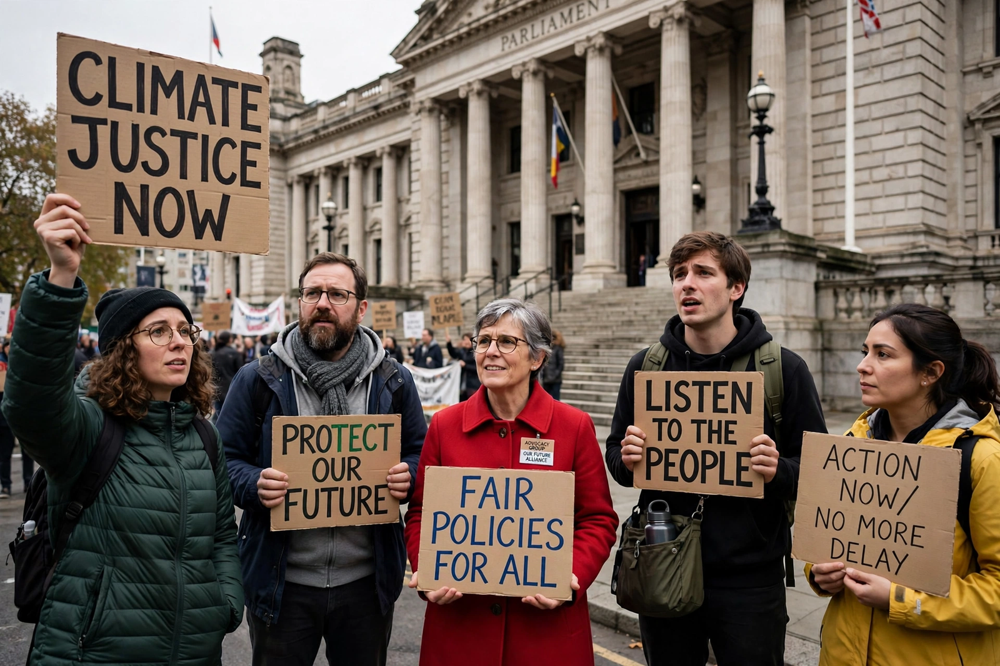

Advocacy groups, also known as interest groups, lobby groups, pressure groups or special interest groups, are organisations that use various forms of advocacy to influence public policy and resource allocation decisions within political, economic and social systems. Advocacy groups may be motivated by moral or ethical principles, commercial interests, or a mixture of both, and they operate at local, national and international levels.
Advocacy groups are commonly divided into sectional groups, which represent a specific segment of society such as a trade union, a professional association or a business federation, and promotional or cause groups, which seek to advance a particular idea or policy — for example environmental protection, animal welfare or human rights — and whose membership is open to anyone who shares the aim. Groups may also be classed as insider groups, which enjoy regular consultation with government, and outsider groups, which rely mainly on public campaigning.
Methods used by advocacy groups include direct lobbying of legislators and officials, grassroots lobbying that mobilises the public to contact decision-makers, public relations and media campaigns, litigation to challenge or defend laws in court, funding of research, and participation in elections through endorsements or campaign contributions. Digital campaigning and social media have become central tools, allowing groups to organise supporters quickly and cheaply.
Organised advocacy has roots in the abolitionist and temperance movements of the nineteenth century. In the United States, the Anti-Saloon League and similar organisations demonstrated the power of single-issue pressure politics. The twentieth century saw rapid growth in the number and professionalism of groups, and the rise of transnational advocacy networks — coalitions of groups in different countries coordinating campaigns on issues such as climate change, debt relief and landmines.
Supporters argue that advocacy groups strengthen democracy by representing interests and identities that political parties neglect, supplying expertise to policymakers and giving citizens a channel of participation between elections. Critics contend that well-funded groups distort policy in favour of wealthy minorities, that access is unequal, and that some groups are "astroturf" operations — artificial grassroots fronts created by commercial sponsors. Many jurisdictions therefore regulate lobbying through registration and disclosure laws.
See also: Lobbying, Civil society, Non-governmental organization.